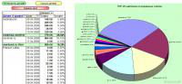

Макрос предназначен для создания сводной таблицы и диаграммы для отчёта по трафику.
В качестве исходных данных выступает таблица со статистикой доступа в интернет - сформированная программой создания отчётов по статистике
Создаваемая сводная диаграмма позволяет легко проанализировать причины перерасхода трафика, а сводная таблица предоставляет детализированный отчёт по каждому сайту.
При составлении отчёта в качестве имени сайта используется домен второго уровня (выделяемый макросом в отдельный столбец из ссылки на ресурс)
|
Вложение |
Размер |
Загрузки |
Последняя загрузка |
|
157 КБ |
160 |
1 день 7 часов назад |